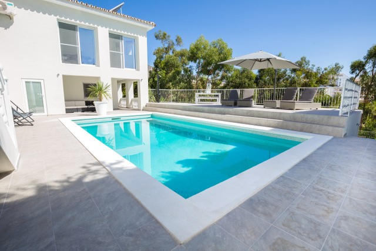
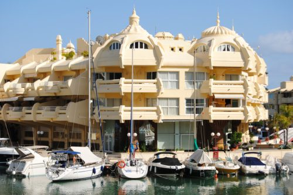

WELKOM BIJ MONICA'S BED & BREAKFAST
Monica’s bed and breakfast is een prachtige en stijlvolle vakantie villa, gelegen aan de Torrequebrada Golfclub in Benalmadena Costa. Als je heerlijk tot rust wilt komen en wil genieten van de Spaanse zon, of als je een golfliefhebber bent, is dit “het perfecte vakantie adres”. Aan alle luxe is gedacht, van een smaakvolle inrichting en een verkoelend zwembad tot een schaduwrijk terras. Het is 15 minuten van het vliegveld van Malaga, dichtbij de bekende badplaatsen Marbella, Torremolinos en Carihuela. Onze B&B ligt op 200 meter van het strand. We hebben 2 luxe kamers en 1 appartement.
Luxe kamers
Onze luxe kamers zijn voorzien van tweepersoons bedden (2 boxsprings van 90x200cm) welke op verzoek uit elkaar kunnen worden geplaatst, voorzien van airconditioning, ventilator, koelkast, Nespresso koffiezet apparaat, waterkoker, kastruimte, bedlinnen en handdoeken, badkamer, Wi-Fi, Nederlandse televisie en een gezellige zithoek, buiten terras met een grote tuin.
Luxe appartement (geschikt voor 4 personen)
Het appartement is voorzien van twee tweepersoons bedden (4 boxsprings van 90x200cm) welke op verzoek uit elkaar kunnen worden geplaatst, compleet ingerichte keuken, Nespresso koffiezet apparaat, woonkamer, Nederlandse televisie, bedlinnen en handdoeken, Wi-Fi, twee slaapkamers, twee badkamers, airconditioning, ventilator.
Algemene informatie
Deze accommodatie is niet geschikt voor minder validen vanwege trappen.
De maanden mei tot september is het minimale verblijf 4 nachten, van oktober tot april minimaal verblijf 2 nachten.
Impressie
Bekijk hier alvast wat foto’s van de kamers en het appartement
 Bekijk alle foto's...Geniet van de omgeving
Benalmádena is een bekende badplaats. Er zijn verschillende leuke winkels en gezellige eetgelegenheden te vinden. Voor wie van het nachtleven houdt zijn er genoeg uitgaansgelegenheden welke tot laat geopend zijn. Benalmádena beschikt over een gezellige haven, Puerto Marina genaamd, waar het ‘s avonds vaak sfeervol verlicht is.
De restaurants liggen verspreid in en om beide centra. In de jachthaven kun je terecht voor een pizza, en langs de promenade vind je verschillende visrestaurants.
De bars liggen verspreid over de beide centra.

- 
Wat andere klanten zeggen
De eigenaars zijn bijzonder gastvrij en helpen je met alles op weg. Volgend jaar kom ik zeker terug!
Mooi schoon appartement in een mooie omgeving. Heerlijk liggen luieren aan het zwembad!
Bedankt voor de heerlijk week die wij hebben gehad ! We hebben genoten van alle luxe!